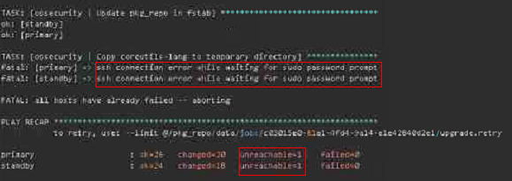
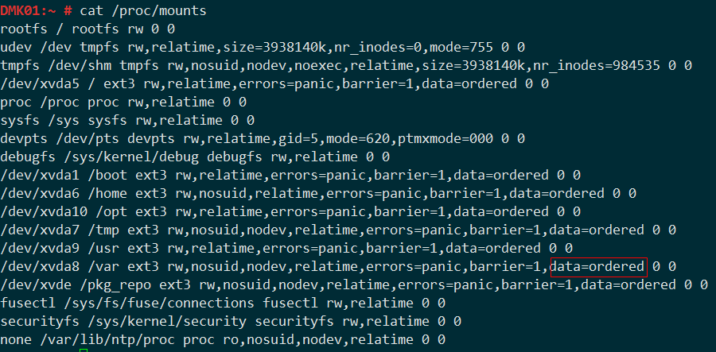
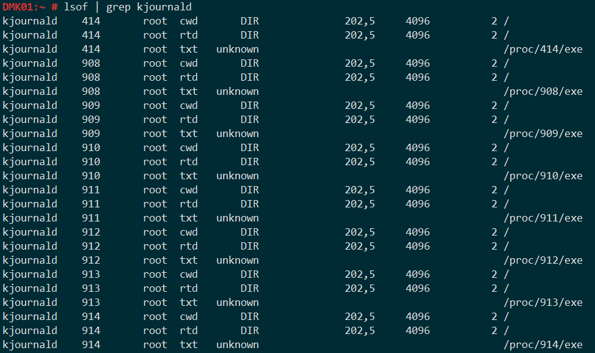

在升级DMK的过程中，出现ansible执行copy模块卡死，导致升级失败。 
当时根据ansible给出的错误提示(ssh connection error while waiting for sudo password prompt)，没有查到解决方法。
随即登录DMK后台server，再查看OS的load和IO。
- 登录过程，等待提示输入密码，卡了好久。
- OS的load在最近5分钟飙高
- DMK的server上单独挂载了数据盘（xvde），与系统盘（xvda)分离；通过
iostat查看，xvda磁盘的使用率持续保持在100%
dmk@DMK01:~> iostat -dxm 2
Linux 3.0.101-0.47.79-default (DMK01) 01/06/2017 _x86_64_
Device: rrqm/s wrqm/s r/s w/s rMB/s wMB/s avgrq-sz avgqu-sz await svctm %util
xvda 0.03 17.91 0.76 8.01 0.02 0.10 27.79 0.26 30.21 4.74 4.15
xvde 0.00 44.33 1.89 5.06 0.05 0.19 72.89 0.62 88.88 0.77 0.54
Device: rrqm/s wrqm/s r/s w/s rMB/s wMB/s avgrq-sz avgqu-sz await svctm %util
xvda 0.00 239.50 0.00 149.50 0.00 1.52 20.84 0.99 6.64 6.61 98.80
xvde 0.00 0.00 0.00 0.00 0.00 0.00 0.00 0.00 0.00 0.00 0.00
Device: rrqm/s wrqm/s r/s w/s rMB/s wMB/s avgrq-sz avgqu-sz await svctm %util
xvda 0.00 249.50 0.00 156.00 0.00 1.58 20.77 0.99 6.36 6.35 99.00
xvde 0.00 0.00 0.00 0.00 0.00 0.00 0.00 0.00 0.00 0.00 0.00
Device: rrqm/s wrqm/s r/s w/s rMB/s wMB/s avgrq-sz avgqu-sz await svctm %util
xvda 0.00 249.00 0.00 154.00 0.00 1.58 20.96 0.99 6.34 6.43 99.00
xvde 0.00 0.00 0.00 0.00 0.00 0.00 0.00 0.00 0.00 0.00 0.00
Device: rrqm/s wrqm/s r/s w/s rMB/s wMB/s avgrq-sz avgqu-sz await svctm %util
xvda 0.00 238.00 0.00 149.00 0.00 1.51 20.75 1.00 6.83 6.70 99.80
xvde 0.00 0.00 0.50 0.00 0.00 0.00 8.00 0.00 0.00 0.00 0.00
出现IO 100%问题，根据经验，第一时间查找系统上D状态的进程，也就是导致出现问题的进程。
dmk@DMK01:~> ps -eo stat,pid,cmd | grep ^D
D 53563 rsync -a /pkg_repo/data/jobs /pkg_repo
D 53568 rsync -a /pkg_repo/data/jobs /pkg_repo
D 53578 rsync -a /pkg_repo/data/jobs /pkg_repo
D 53582 rsync -a /pkg_repo/data/jobs /pkg_repo
D 53587 rsync -a /pkg_repo/data/jobs /pkg_repo
D 53599 rsync -a /pkg_repo/data/jobs /pkg_repo
D 53607 rsync -a /pkg_repo/data/jobs /pkg_repo
发现是本版本优化HA归档jobs的进程引起的。由于之前的migrate动作是每2分钟执行一次（防止主突然断电，引起备节点数据未同步，主备倒换，数据丢失），所以会出现比较多的rsync归档进程。
rsync归档这么慢，是因为数据量非常大，jobs有10000+的任务文件夹，每个job下面又有大量的小文件。
疑问1：为什么是系统盘（xvda）的使用率是100%？
rsync归档的操作是在数据盘（xvde），为什么系统盘（xvda）的使用率是100%，反而xvde的使用率不高？
DMK server使用的是ext3文件系统（日志文件系统，ext2没有日志功能）,使用ordered默认日志模式。 
补充点基础
- ext3 是带有日志功能文件系统，它基于ext2文件系统实现。以一致性的方式写入数据，保证数据完整性。
- 日志型文件系统，在进行对文件系统
写数据之前，写将数据写到「日志区」，然后再写入文件系统，在写入文件系统之后删除日志。写日志也会带来一定的额外开销。 - ext3 有3种日志模式
- journal，
数据和元数据都写入日志，提供了最高的数据一致性 - ordered，
只将元数据写入日志，然后它会保证先将数据写入磁盘，这是缺省的Ext3日志模式。 - writeback，采用
回写的方式，牺牲数据一致性，获得更好的性能。仍然会将元数据记录到日志中，此模式对小文件IO性能提升最为明显，但可能造成数据丢失。
- journal，
原来在写数据的时候，需要先将元数据写入日志。ext3是使用kjournald进程写日志的。查看得知，操作的确实是/即xvda磁盘。

疑问2：为什么是kjournald超长时间的做不完，xvda的使用率持续高，xvde很低？
按理说，ordered相比于journal应该是要提高不少性能，毕竟只是将元数据写入日志。
这个就得说明下，DMK的jobs下的文件都是ansible的playbook脚本，虽然非常小但是特别多。
小文件多，元数据就多。所以，xvda持续高（文件多），但是xvde很低（文件小）。
防止升级现网出现此问题的解决方案
提供一个提前（升级前，找业务空闲时间）执行的脚本，包含如下内容：
- 删除migrate定时任务，防止出现还未升级完成，进行归档jobs引起IO过高，升级失败
- 提前（升级前，找业务空闲时间）进行归档，rsync是增量同步变化的，所以在升级的时候就会非常快
- 为了升级更快的完成，提前也把升级时相关的备份动作也提前执行
#!/bin/bash
# Need root
if [[ $(whoami) != root ]]; then
echo 'Need log on as root to run'
exit 1
fi
# Delete cron
sed -i "/migrate_playbook.sh/d" /etc/crontab
echo "0 */2 * * * dmk /opt/autodeployment/script/migrate_playbook.sh > /dev/null 2>&1" >> /etc/crontab
rccron restart
# Backup ruby and nginx
su - dmk -c "nohup rsync -a /opt/ruby /pkg_repo/bak >/dev/null 2>&1 &"
su - dmk -c "nohup rsync -a /opt/onframework/nginx /pkg_repo/bak >/dev/null 2>&1 &"
# Beforehand archive, run background
su - dmk -c "nohup rsync -a /pkg_repo/data/jobs /pkg_repo >/dev/null 2>&1 &"
本地复现和疑问
本地实测数据：20000+文件夹，60万+的小文件，大小为2.7G，rsync耗时1个小时。
疑问： 同样也是执行多次rsync命令，但是没有引起输入命令都卡的情况，但是测试床非常卡，命令执行都有困难，谁知道？
总结
对于比较耗系统资源（CPU、MEM、Disk IO、Network IO）的频繁定时任务，最好能判断下进程是否未完成。
若未完成，则先不启动新的进程了。防止系统卡死。
之前的定时任务每2分钟进行一次migrate，在新的优化jobs执行的时候，jobs已经有非常大的量了，第一次势必会比较慢，2分钟肯定不能做完此动作。所以就2分钟起一个，起了好多，全部D状态，而且系统原本性能就不好。